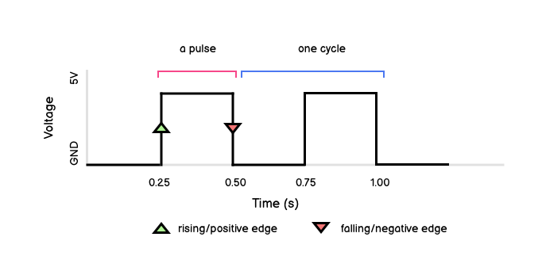

Clock signals
In the examples of digital circuits so far (i.e adders and latches) everything happens in a single instant or over several repeated instances. This is because of how simple the circuits are. In the case of latches only a single bit is updated. And even with rippled adders they are just a series of 1-bit updaters in a chain.
With more complex circuits that use multiple memory devices which store a series of bits at once, we need a way to ensure that the bits are set at the same time. We do this by sequencing the execution with the pulses of the system clock.
A single iteration of the volatage rising and falling is a pulse. A complete oscillation from low to high and back to low is a cycle. As with all electromagnetic signals we measure the frequency of the wave in Hertz: cylcles per second. We also further distinguish the rising and falling edge of a pulse. Rising represents the signal passing from ground to its maximum voltage and falling is the reverse (the electrons moving from the voltage source to ground).
The diagram below shows a pulse cycle of 2Hz.

Linking components to the clock
- All components that need to be synchronised are connected to the clock
- State changes in the component occur only when a clock pulse occurs
- Clock-driven components will typically trigger their state changes on either the rising edge or the falling edge of the pulse.
- Components that trigger state changes on the rising pulse are positive edge-triggered
- Components that trigger state changes on the falling pulse are negative edge-triggered
The role of the clock is essential in the functioning of the CPU. It is the system clock that gives CPUs their performance rating: how many processes can execute within a given clock cycle.